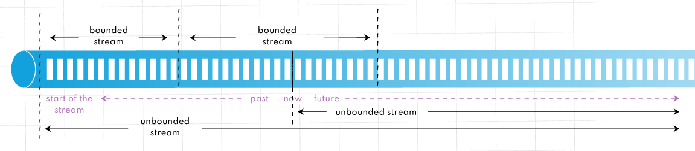
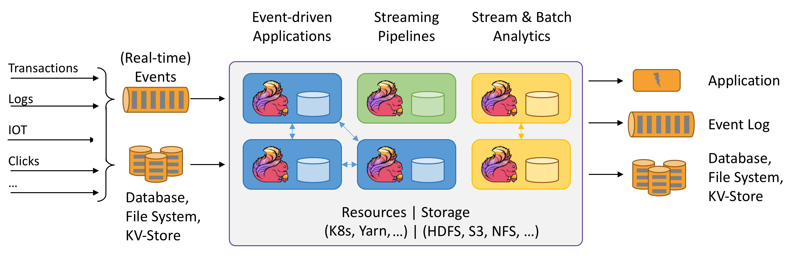
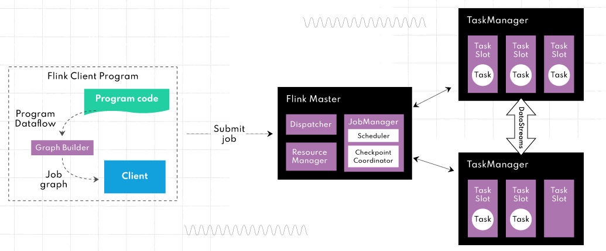

6.5 아파치 플링크 (Apache Flink)#
플링크(Flink)는 독일어로 민첩함을 뜻하는 단어로 베를린 TU대학교에서 시작된 아파치 프로젝트입니다. Exactly-once의 이벤트 처리를 보장하는 네이티브 스트림 방식으로, 지연 발생이 적고 처리량은 높으며 비교적 사용하기 쉬운 이점이 있습니다. 일괄처리 기능도 제공하지만 스트림 프로세싱을 목적으로 주로 사용됩니다.
대용량 데이터 스트림 처리를 위한 오픈소스 분산형 스트림 처리 엔진
Flink 특징#
네이티브 스트림: 경량 분산 스냅샷을 구현해서 Exactly-once 를 보장하면서 오버헤드도 낮출 수 있습니다.
인메모리: Java 애플리케이션으로 JVM(Java Virtual Machine)에서 실행되지만 JVM GC(Garbage Collector)에 전적으로 의존하지 않습니다. 대신 커스텀 메모리 관리자를 구현하여 안정적인 메모리 사용량을 유지하면서 성능을 향상시킵니다.
손쉬운 설정 및 사용, 강력한 확장 기능: 입력 이벤트 스트림에 개별적으로 액세스할 수 있으며 강력한 윈도우 연산자를 사용하여 분석을 수행할 수 있습니다. 고급 분석용 API에서 상세한 제어 기능을 제공하는 상태 저장 이벤트 기반 애플리케이션 수준에 이르기까지 *계층화된 API를 제공합니다.
계층화된 API

DataStream API: Flink 애플리케이션 작성 시 UnBounded Streams 에서 사용되는 고수준 API입니다.
DataSet API: Flink 애플리케이션 작성시 Bounded Streams에서 사용되는 더 낮은 수준의 API입니다.
상태 기반 계산(stateful computation) 지원: 기본 비즈니스 로직을 실행하는 모든 애플리케이션은 이벤트 또는 중간 결과를 기억하여 나중에 다음 이벤트가 수신되거나 특정 기간이 지난 후에 접근할 수 있도록 합니다.

게으른 평가: 계산을 최대한 늦출 수 있는 게으른 평가를 사용합니다. 즉, 계산이 필요할 때까지 계산이 수행되지 않습니다.
지연 데이터 처리: 이벤트 발생 시간과 처리 시간을 구분하고 워터마크를 사용하여 지연 데이터를 처리합니다. 즉, 데이터 포인트는 들어오는 즉시 처리되지 않더라도 처리될 수 있습니다.
Flink 아키텍처 및 주요 구성 요소#

JobManager: 하나이상의 TaskManager로 구성되어 있으며, 제출된 작업을 예약 및 관리하고 작업에 자원을 할당해 실행 계획을 조율합니다.
TaskManager: 클러스터의 여러 노드에 걸쳐 할당된 자원에서 사용자 정의 기능을 실행합니다.
이 아키텍처의 장점은 대규모 데이터 세트를 거의 실시간으로 처리할 수 있도록 효율적으로 확장할 수 있다는 것입니다.
Flink Ecosystem#

DataSet API: 일괄 처리를 위한 Flink의 핵심 API로 Map, Reduce, Join, Co-group 같은 반복 연산에 사용됩니다.
DataStream API: 스트리밍 데이터(무제한 및 무한 라이브 데이터 스트림)를 처리하는 데 사용되며, 이를 통해 사용자는 외부 데이터 저장소를 쿼리하여 윈도우잉, 시간당 기록 변환, 이벤트 보강 등 들어오는 이벤트에 대한 임의의 연산을 정의할 수 있습니다.
복합 이벤트 처리(CEP: Complex Event Processing) 정규식이나 StateMachine을 사용하여 이벤트 패턴을 지정해DataStream API와 통합되어 데이터에 대한 패턴 인식을 실시간으로 수행할 수 있습니다. 네트워크 이상 탐지, 규칙 기반 알림, 프로세스 모니터링, 사기 탐지 같은 애플리케이션에
SQL 및 Table API: SQL 쿼리와 Table API를 사용해 테이블 스키마를 기반으로 데이터를 쉽게 조작하여 최소한의 노력으로 복잡한 데이터 변환 파이프라인을 구축할 수 있습니다.
Gelly
DataSet API 위에서 실행되는 다목적 그래프 처리 및 분석 라이브러리로 확장성과 견고함을 모두 갖추고 있습니다.
Gelly는 label propagation, triangle enumeration, page rank와 같은 기본 제공 알고리즘을 갖추고 있으며 쉽게 구현할 수 있는 사용자 정의 그래프 알고리즘 API도 지원합니다.
FlinkML
DataSet API 위에서 실행되는 분산 머신 러닝 알고리즘 라이브러리로 선형 회귀, 로지스틱 회귀, 의사 결정 트리, K-평균 클러스터링, LDA 등과 같은 지도 및 비지도 학습 기법을 모두 적용할 수 있는 통합된 방법을 사용자에게 제공합니다.
신경망 구축을 위한 실험적인 딥 러닝 프레임워크(TensorFlow 패키징)를 제공합니다.
example code
from pyflink.commonimport Types from pyflink.datastreamimport StreamExecutionEnvironment from pyflink.ml.linalgimport Vectors, DenseVectorTypeInfo from pyflink.ml.clustering.kmeansimport KMeans from pyflink.tableimport StreamTableEnvironment # create a new StreamExecutionEnvironment env= StreamExecutionEnvironment.get_execution_environment() # create a StreamTableEnvironment t_env= StreamTableEnvironment.create(env) # generate input data input_data= t_env.from_data_stream( env.from_collection([ (Vectors.dense([0.0, 0.0]),), (Vectors.dense([0.0, 0.3]),), (Vectors.dense([0.3, 3.0]),), (Vectors.dense([9.0, 0.0]),), (Vectors.dense([9.0, 0.6]),), (Vectors.dense([9.6, 0.0]),), ], type_info=Types.ROW_NAMED( ['features'], [DenseVectorTypeInfo()]))) # create a kmeans object and initialize its parameters kmeans= KMeans().set_k(2).set_seed(1) # train the kmeans model model= kmeans.fit(input_data) # use the kmeans model for predictions output= model.transform(input_data)[0] # extract and display the results field_names= output.get_schema().get_field_names() for resultin t_env.to_data_stream(output).execute_and_collect(): features= result[field_names.index(kmeans.get_features_col())] cluster_id= result[field_names.index(kmeans.get_prediction_col())] print('Features: '+ str(features)+ ' \tCluster Id: '+ str(cluster_id))